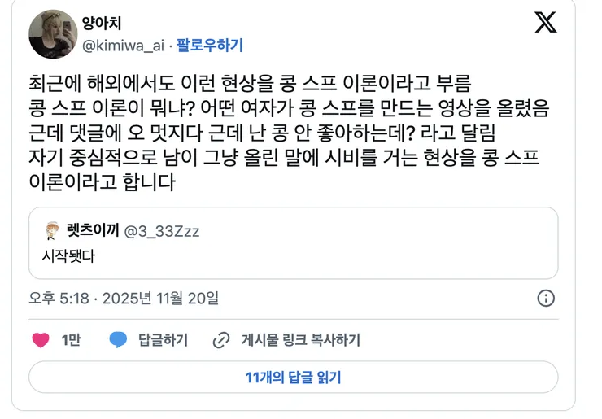
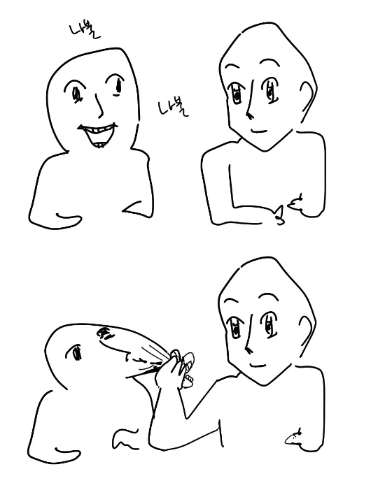

일종의 자기 중심적 사고를 일컫는 말로, 인터넷 글 등의 상황과 맥락엔 신경 쓰지 않고 오로지 자신의 상황만 생각하여 말하는 것들을 첫 유래가 된 콩스프 썰에서 이름을 따와 "콩스프 이론" 이라고 불린다.
공식적인 학술 이론은 아니며, 인터넷상에서 어떤 글이나 상황의 전체 맥락은 무시하고, 자기 경험이나 자기 입장만 기준으로 해석하고 반응하는 행동을 비꼬기 위해 만든 용어이다.
솔직히 내가 이거 제일 심하고
내주변 도르로만 생각하는 우물안 개구리야
아닌데? 죽은 인터넷이라 그런건데?